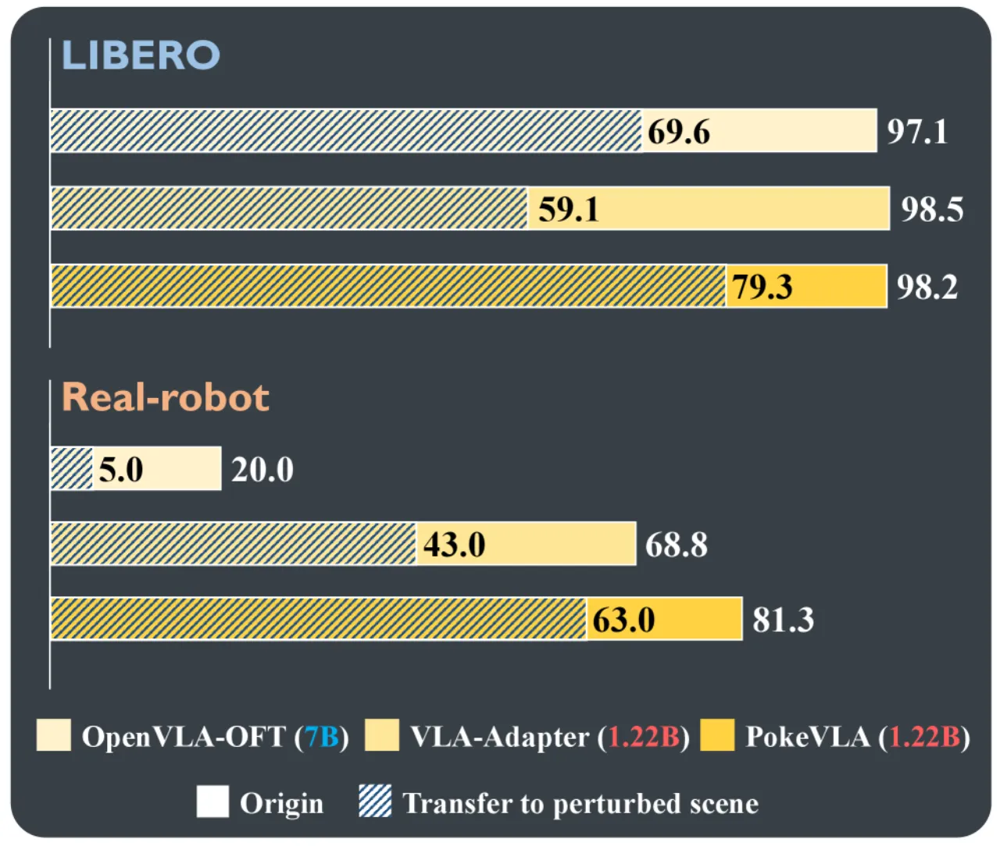
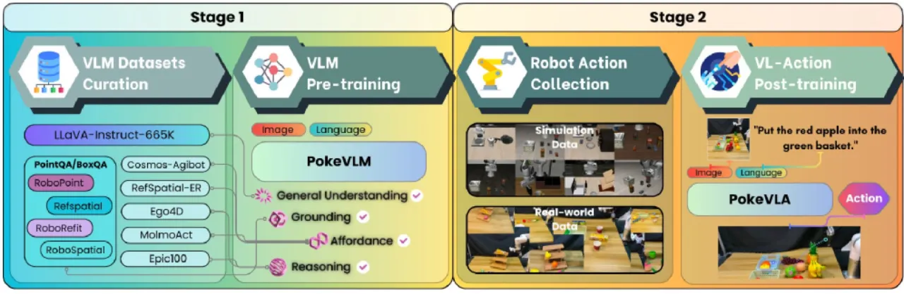
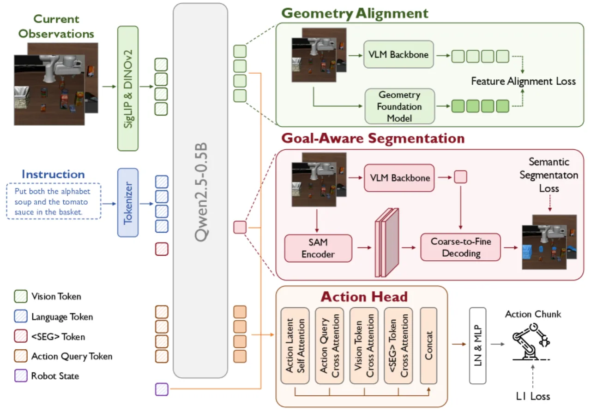
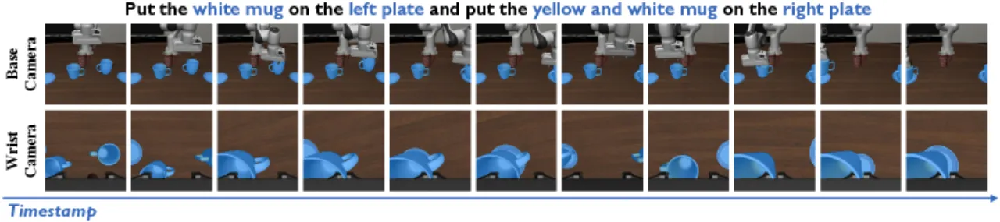
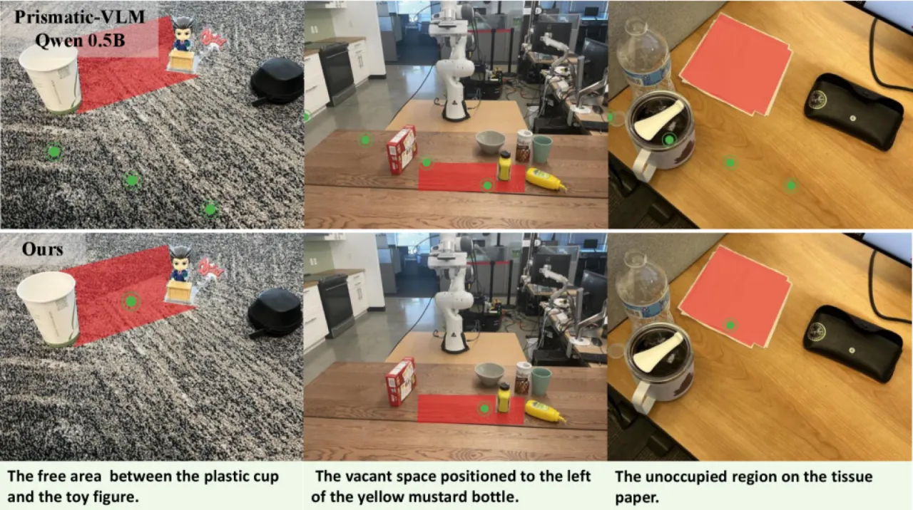
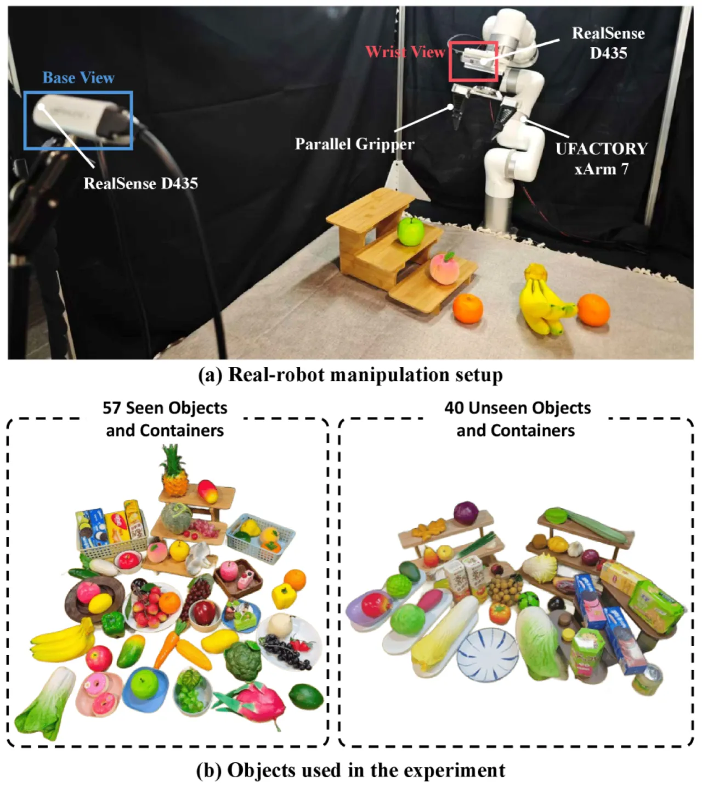

PokeVLA 是一个仅有 1.22B 参数的轻量级 Vision-Language-Action 模型，通过两阶段训练策略——先在 2.4M 多模态样本上预训练具身 VLM，再引入目标感知语义分割与几何对齐的后训练——在 LIBERO-Plus 鲁棒性基准上超越所有同量级方法，并在真实机器人实验中取得 81.25% 的操作成功率。
现有大型 VLA 模型参数量动辄数十亿，难以在算力受限的边缘设备上部署。与此同时，仅靠模仿学习训练的小型模型严重缺乏对空间关系、操作意图和几何结构的理解，在扰动场景下泛化能力尤为不足。如何在保持轻量化的同时，赋予 VLA 模型足够丰富的 world knowledge？
"We collect and curate a large-scale embodied multimodal dataset of approximately 2.4 million entries to pre-train a tiny-scale embodied vision-language model… introduce a novel method for learning manipulation-relevant representations, featuring multi-view consistent learning of the manipulation targets and geometric alignment."

传统 VLA 模型要么体量巨大（如 OpenVLA 7B），要么缺乏场景理解能力。PokeVLA 瞄准一个关键问题：即便是 0.5B 语言骨干，只要配合充分的 embodied 先验预训练和精心设计的操作相关表征注入，就能在模拟和真实世界中实现可靠、鲁棒的机器人操作。
PokeVLA 采用两阶段训练范式：第一阶段在大规模具身多模态数据集上预训练出 PokeVLM；第二阶段通过目标感知语义分割（Goal-Aware Segmentation）与几何对齐（Geometry Alignment）将操作相关的表征注入到动作头中。

以 Prismatic-VLM 为骨架，语言模型选用 Qwen2.5-0.5B，视觉编码器为 SigLIP（语义）+ DinoV2（空间感知）双组件，通过 MLP projector 桥接视觉与语言空间。预训练数据集共约 2.4M 条，覆盖四类具身任务：
训练配置：AdamW 优化器，学习率 2e-5，batch size 128（8 卡 × 4 per-GPU × 4 梯度累积），线性 warmup（3% steps）+ cosine decay，共训练 2 个 epoch。

借鉴 LISA 的设计，在语言模型中引入特殊 token <SEG>，其 embedding 整合了场景上下文与目标物体细节。解码采用 coarse-to-fine 两步范式：
<SEG> embedding 通过 SAM prompt encoder，获得 sparse/dense embeddings，经粗粒度 mask decoder 得到初步掩码；<SEG> embedding 进一步细化预测。分割损失为 focal loss 与 KL divergence 之和：Lseg = λfocal FOCAL(M̂,M) + λKLD KLD(M̂,M)，其中 λfocal = λKLD = 1。多视角一致性通过跨视角共享 <SEG> embedding 保证，使模型对操作目标形成稳定的跨视角表征。

<SEG> embedding 始终指向正确的操作目标。利用 VGGT（视觉几何基础模型）在训练阶段提取多视角图像的几何特征，通过余弦相似度损失将语言模型视觉 token 的隐状态对齐到 VGGT 特征空间：
Lgeo = (1/VN) ∑[1 − cos(P(hv), fgeo)]
几何对齐仅在训练阶段使用 VGGT，推理时无额外开销。轻量级 projector 负责维度对齐。整体训练目标为：
L = Laction + λseg Lseg + λgeo Lgeo
其中 λseg = 0.2，λgeo = 0.4。
采用含 L 个 transformer 层的 cross-attention 动作头，依次对动作 latent 进行：自注意力 → 与 query embedding 及机器人状态做 cross-attention → 与视觉隐状态做 cross-attention → 与 <SEG> embedding 做 cross-attention，最终通过 LayerNorm + MLP 输出动作 chunk：
"attl = [SA(atl), CA(atl,[hq,MLP(st)]), CA(atl,hv), CA(atl,hseg)]"
在模拟平台（LIBERO、LIBERO-Plus）和真实机器人（xArm7 + 双 Realsense 相机）上对 PokeVLA 进行全面评估，对比基线为 OpenVLA-OFT 和 VLA-Adapter。
在空间感知、空间推理等具身 VLM 基准上，PokeVLM 大幅超越 Prismatic-VLM 基线：
| Benchmark | Prismatic-VLM（基线） | PokeVLM |
|---|---|---|
| Where2Place (Point) | 0.075 | 0.163 |
| Where2Place (Bbox) | 0.095 | 0.194 |
| Where2Place (Location) | 0.033 | 0.260 |
| RefSpatial (Placement) | 0.012 | 0.180 |
| RefSpatial (Unseen) | 0.015 | 0.169 |
| CV-Bench | 0.455 | 0.531 |
| 方法 | Spatial | Object | Goal | Long | Total |
|---|---|---|---|---|---|
| OpenVLA-OFT | 98.8% | 97.6% | 96.0% | 96.0% | 97.1% |
| VLA-Adapter | 99.6% | 100% | 97.6% | 96.8% | 98.5% |
| PokeVLA | 99.6% | 99.6% | 98.4% | 95.2% | 98.2% |
在迁移设置下（在 LIBERO 上训练，在 LIBERO-Plus 上测试），PokeVLA 超越 OpenVLA-OFT +9.7%，超越 VLA-Adapter +20.2%。在各类扰动下的性能对比：
| 扰动类型 | OpenVLA-OFT | VLA-Adapter | PokeVLA |
|---|---|---|---|
| Camera Viewpoint | 56.4% | 52.4% | 84.7% |
| Robot Initialization | 55.5% | 55.6% | 64.3% |
| Language Variation | 79.5% | 70.7% | 84.8% |
| Lighting | 84.6% | 69.5% | 95.1% |
| Sensor Noise | 75.8% | 65.1% | 89.8% |
| Total（Transfer） | 69.6% | 59.1% | 79.3% |


| 方法 | 8 任务平均成功率 |
|---|---|
| OpenVLA-OFT | 20.0% |
| VLA-Adapter | 68.75% |
| PokeVLA | 81.25% |
在真实场景扰动测试（Table X）中，PokeVLA 综合超越 VLA-Adapter +20%（63.0% vs 43.0%），在末端执行器初始位姿扰动（70.0%）、目标物体扰动（60.0%）、光照扰动（75.0%）三类测试中均保持较高成功率。
| 配置 | Total | Spatial | Object | Goal | Long |
|---|---|---|---|---|---|
| Baseline | 78.2% | 83.2% | 71.2% | 75.5% | 94.7% |
| + Pre-training | 82.9% | 87.1% | 80.5% | 78.6% | 94.7% |
| + Geometry | 81.0% | 86.4% | 70.0% | 81.4% | 97.5% |
| + Goal-Aware | 82.5% | 83.8% | 77.9% | 82.9% | 98.1% |
| Full Model | 85.3% | 88.8% | 81.1% | 83.0% | 97.5% |
消融实验表明，预训练、几何对齐和目标感知分割三个模块各自独立带来明显提升，三者结合后整体达到最佳 85.3% 的迁移成功率。
真实机器人实验仅限于桌面拾放场景（110×110 cm 工作空间），共 8 项任务，每任务 10 次试验，数据集仅 60 种任务类型、3,000 条轨迹。泛化到更复杂、多样的操作任务尚未验证。
在 LIBERO-Plus fine-tuned 设置下，Robot Initialization 扰动仅达 52.9%，是所有扰动类型中最低的一项，说明模型对机械臂初始位姿变化的适应能力仍有明显不足。
几何对齐模块在推理时不引入 VGGT，避免了额外开销，但也意味着推理阶段无法动态更新几何先验，对高度遮挡或新颖几何场景的泛化能力存在潜在瓶颈。
2.4M 预训练样本主要来自英文指令数据集，多语言/跨语言操作场景的泛化能力未经验证。